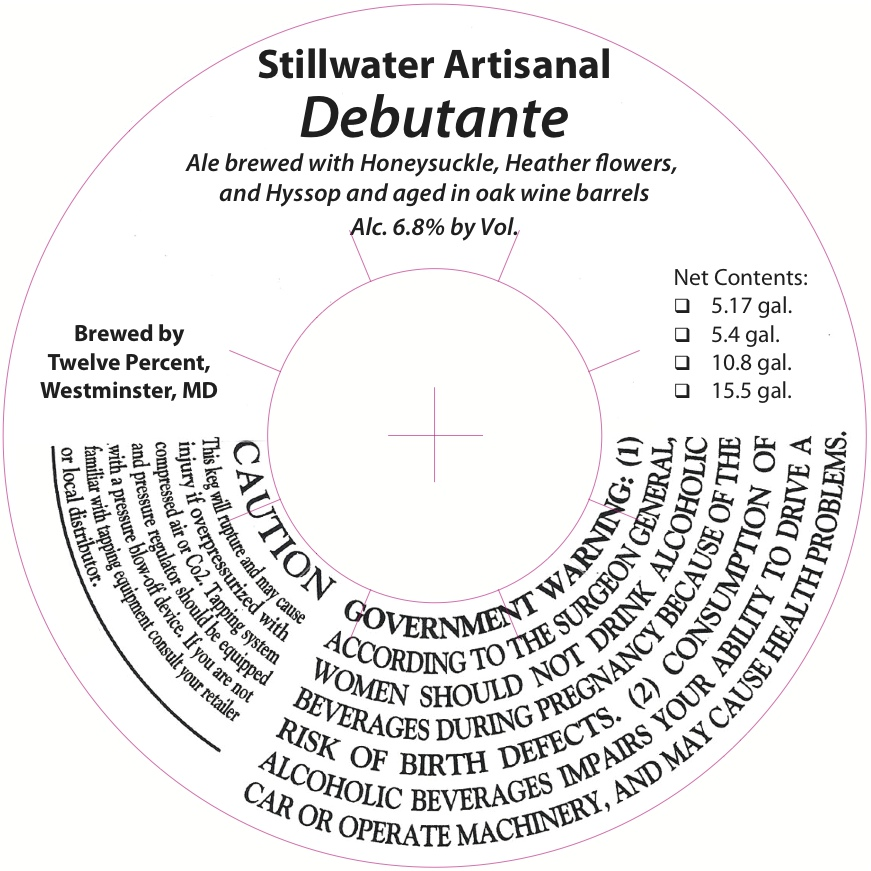
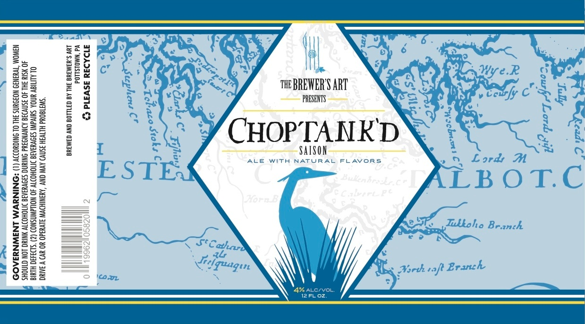

How it works
AI reads the label and weighs close calls. Code checks the exact rules: government
warning, ABV, proof, net contents. The agent decides. Full approach in
README.md, ASSUMPTIONS.md, and docs/model-eval.md.
Discovery notes, as tests
Real registry labels are the product. The cards below are synthetic
(scripts/generate-labels.py), for character-exact control no approved label
offers. Each recreates an interview case: Old Tom (the brief's sample,
clean), Dave's "STONE'S THROW" vs "Stone's Throw", Jenny's
title-case warning and angled photo, a paraphrased warning, an ABV mismatch, a missing
warning, a net-contents quirk. Click any to run it.
Known limits
Two real labels sit past the edge of vision transcription. Both fail safe: a wording mismatch flagged for review, never a silent pass. Production would track this rate.

